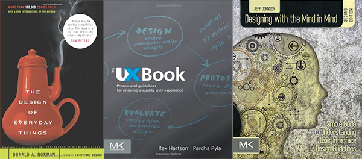

Objectives
- Presentaton schedule here
- Student presentations will range from theory to practice on related, assigned topics
- Student pairs will deliver a 3 minute visual presentation (pdf format, no more than five slides)
to the class summarizing a chapter of Don't Make Me Think
- Consider aspects of the chapter that are relevant and interesting to our class
- Include a critical response to the content of your research
- Show a contemporary (and hopefully innovative)
example that illustrates the essence of the chapter
- Practice your presentation ahead of time and remember to communicate to your audience
- The presentation file must be on the instructor’s desktop by the start of class
Submit
- 1-page paper summarizing the information in your presentation with
lastName/s, firstName/s, DES 157 in the upper right corner
- Note: glenda will take notes on the paper while you present,
so if you need the paper for your presentation, print two copies
- You will be graded on quality of writing and on the substance of your example
(familiarity with content), critical evaluation and engaging quality (clarity) of presentation
blog.html
- Each student: Copy/paste your paper to your blog and include images and links as appropriate
Upload
- To your github account (updated blog)
- Submit the URL for this process activity to the Canvas Assignment
GRADING:
- chapter summary: 2
- current example: 1.5
- presentation: 1
- blog: .5
- total points: 5